In collaboration with Alicia Melançon, we chose to design an ecological cosmetics package using ingredients native to the Gaspé Peninsula coast in Quebec: sea salt, vesicular wrack (Fucus vesiculosus), and kelp (Laminaria). The entirety of the project draws directly on the local marine ecosystem as a source of formal and graphic inspiration.
The blue mussel (Mytilus edulis), guided our response to the following question:
How does nature protect an organism from impact and fracture without adding excessive mass? By producing the packaging from calcium carbonate extracted from Gaspé blue mussel shells, we can replicate daily shock resistance throughout the container's lifecycle, creating a durable vessel well-suited for refillable use.
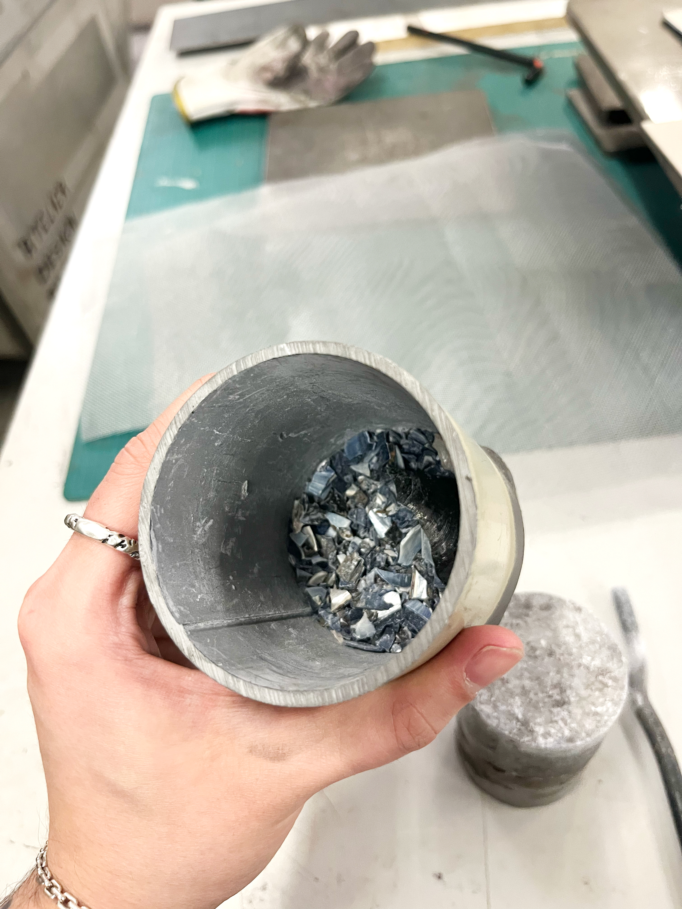
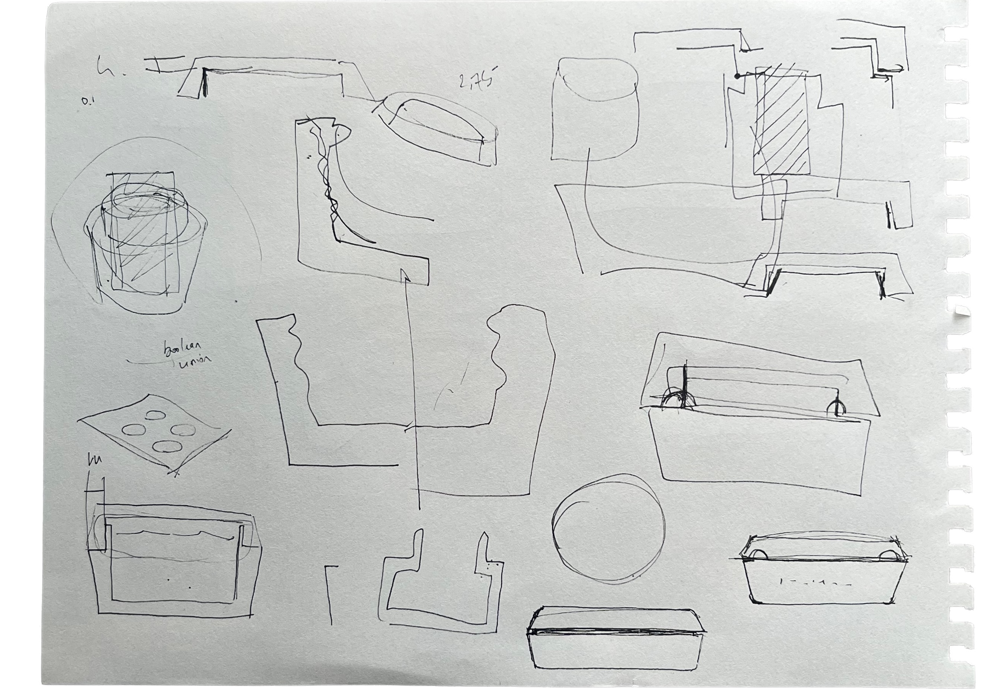
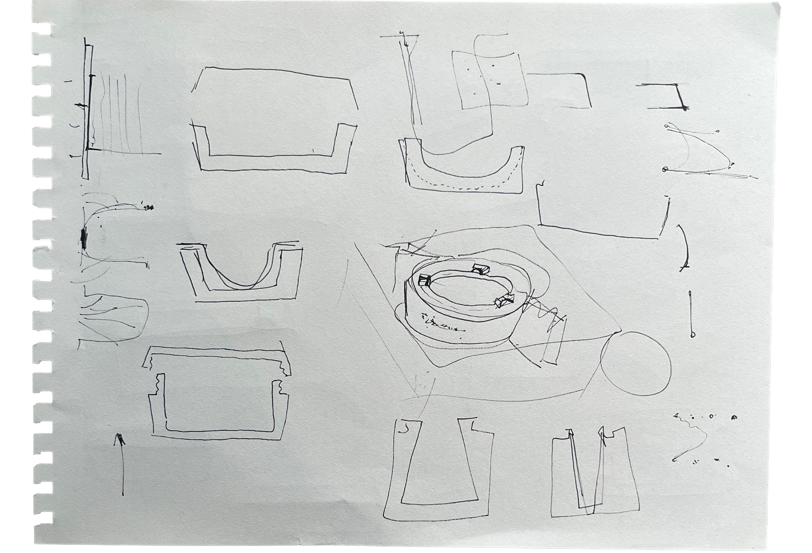
Initial concepts were translated into precise 3D models in Rhino and produced as 3D-printed maquettes to create molds for the final packaging. Through iterative prototyping, the geometry was refined with filleted edges to improve comfort in hand and enhance the tactile quality of the object. To support accessibility, the lid incorporates distinct textures that allow blind and low-vision users to differentiate between the cream and exfoliant by touch, integrating inclusive design into the package's physical form.
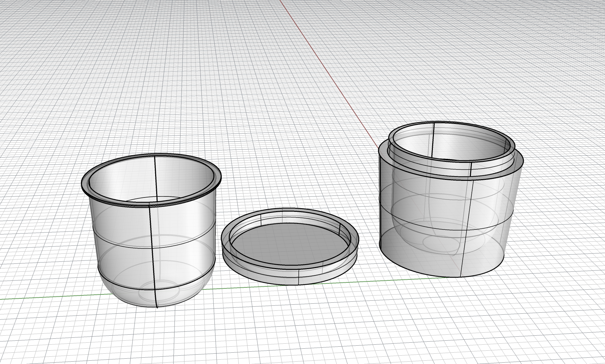
Our visual identity for the package is shaped by the same circular logic. We decided to use Ivan Murit's parametric typography tool, Living Path, as the foundation for the visual identity. Rather than drawing fixed letterforms, it generates fluid, ever-evolving shapes, producing alternatives, variations, and non-linear trajectories that allow letters to adapt to their geographic context.
Instead of freezing a definitive form, the tool creates a living system in which each occurrence can be unique. This logic directly echoes the values of Marée: a brand born from the sea, where nothing is ever identical, currents unfold without repetition, and the imperfection of the living is celebrated.
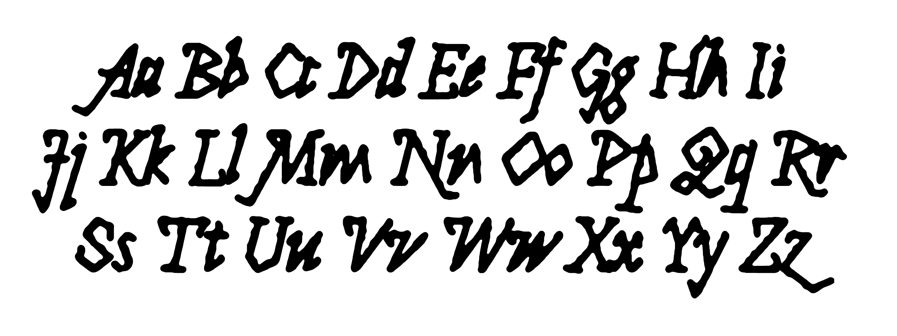
Once the design was finalized, the container was rendered, 3D printed with the logotype integrated into the lid, and used to produce a silicone mold. The mold was then cast with a custom biomaterial composed of blue mussel shell powder and resin, simulating the appearance and behavior of an ecological copolymer. This material substitution allowed us to prototype the intended sustainable packaging despite the limited access to industrial biopolymers and the time constraints of a student project.
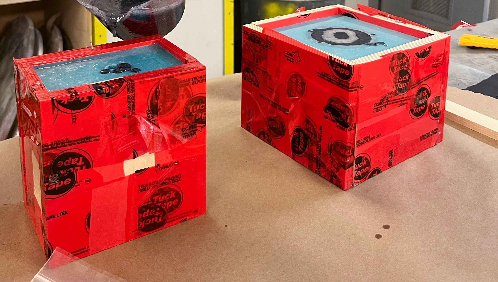
The final prototype embodies Marée's vision of circular, biomimetic packaging inspired by the resilience and material intelligence of Gaspé's coastline.
Cast from a custom biomaterial made with blue mussel shell powder and resin, the reusable outer container is designed as a durable object rather than disposable packaging. Its tactile, stone-like surface evokes the textures of the maritime landscape while reinforcing the project's ecological narrative. Inside, replaceable PLA cartridges allow users to restock either the cream or exfoliant without discarding the primary vessel, significantly extending the product's lifespan and reducing material waste.
Through biomimicry, accessibility, and modular design, Marée proposes an alternative to conventional cosmetic packaging—one that treats the container as a lasting object and the consumable as the only replaceable component.
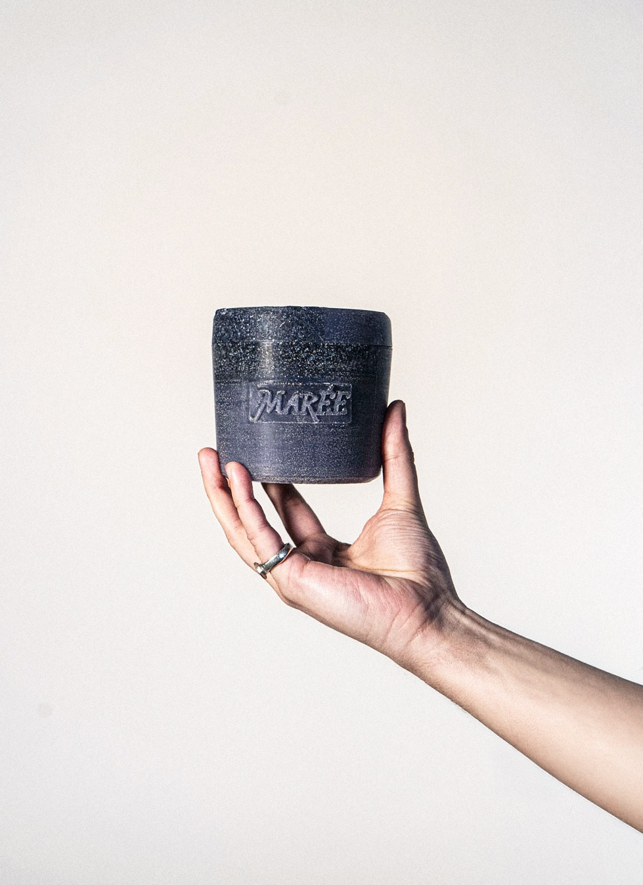
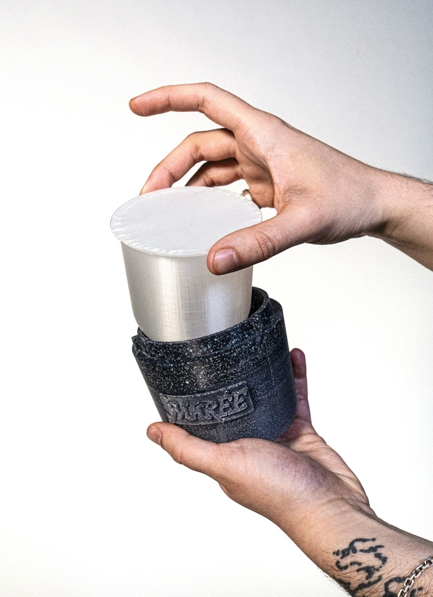
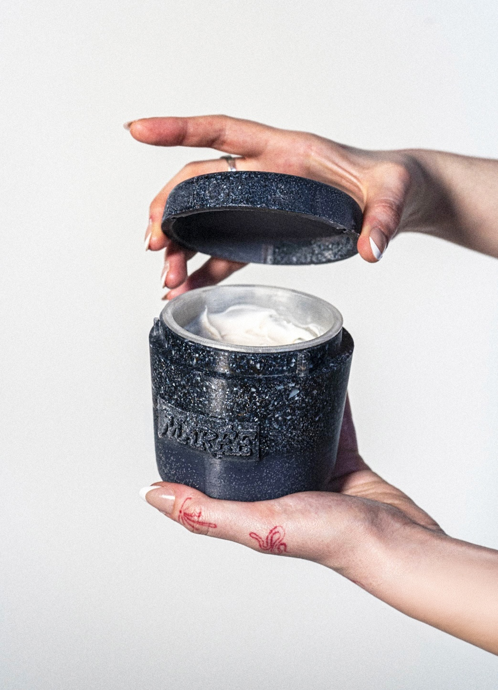
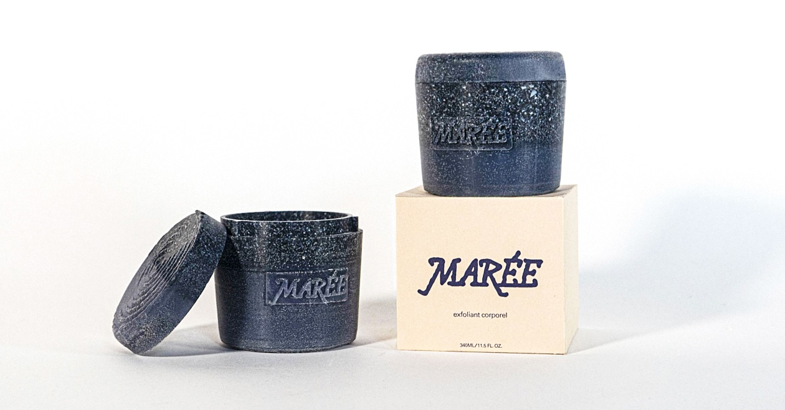
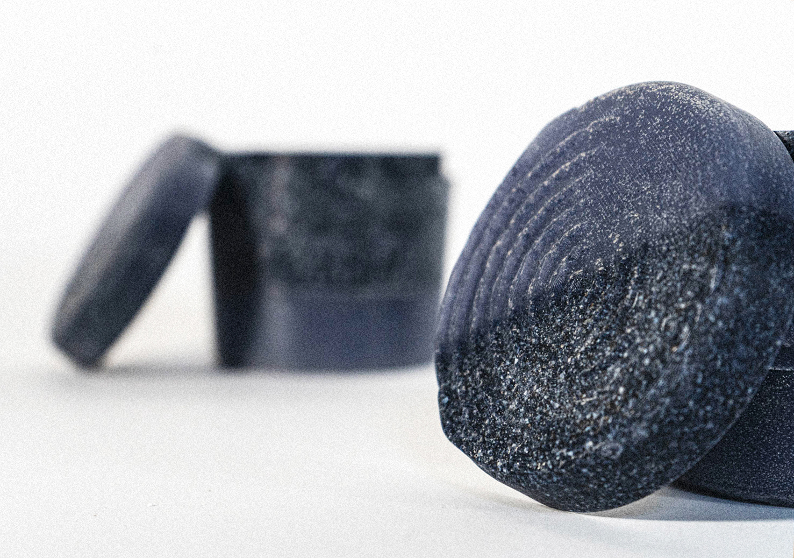